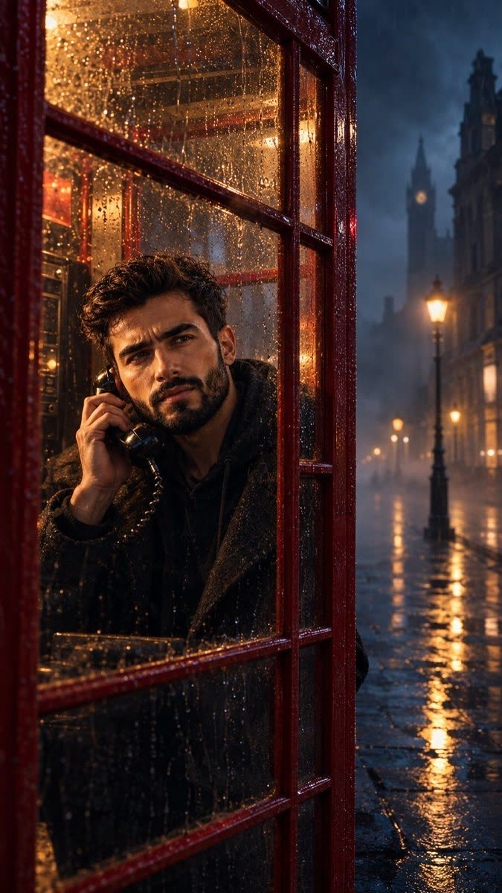

Noir Telephone Booth Portrait
AES-006Aesthetic / GenreGPT Image 2by HeisenLegacySeptember

Creates a cinematic night photograph of a man in a vintage red telephone booth during heavy rain, emphasizing moody lighting and realistic details.
Prompt
Ultra-realistic cinematic night photograph of a strikingly handsome young man in his early 20s sitting inside a vintage red telephone booth on a deserted city street at midnight. He has thick naturally wavy jet-black hair, strong eyebrows, deep dark-brown eyes, a defined sculpted jawline, subtle natural stubble, realistic skin texture, visible pores, and refined masculine facial features. He holds an old black telephone receiver close to his ear, with a mysterious, thoughtful expression as he looks slightly toward the rain-covered glass. Heavy rain falls outside, droplets streaming down the glass panels, while dense atmospheric fog surrounds the booth and softly obscures the empty street. Wet pavement reflects the warm amber glow of the booth and distant streetlights. Vintage urban architecture fades into the mist in the background. Subtle neon reflections, cinematic rim lighting, soft volumetric light beams, deep shadows, moody midnight-blue atmosphere, realistic reflections on wet surfaces, shallow depth of field, 85mm lens, f/1.4, dramatic film grain, high dynamic range, photorealistic skin, intricate fabric details, sophisticated noir aesthetic, mysterious and emotional atmosphere, premium editorial photography, 8K, ultra-detailed, natural proportions, no text, no watermark, no women.
Tags: 35mm film, neon, noir, fashion